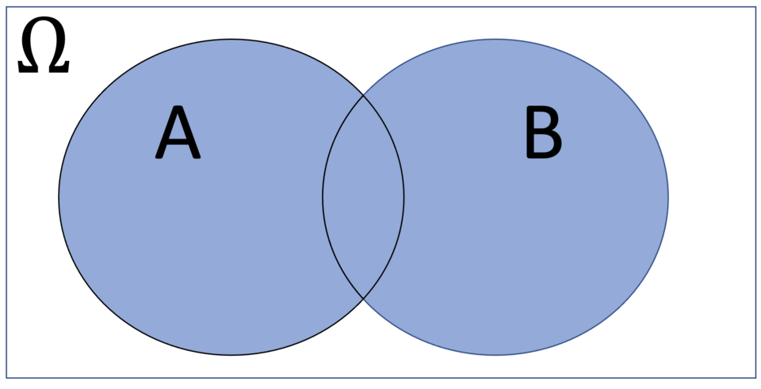
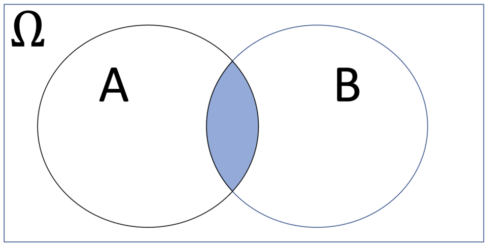
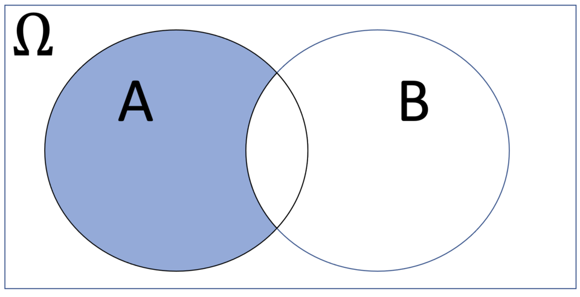
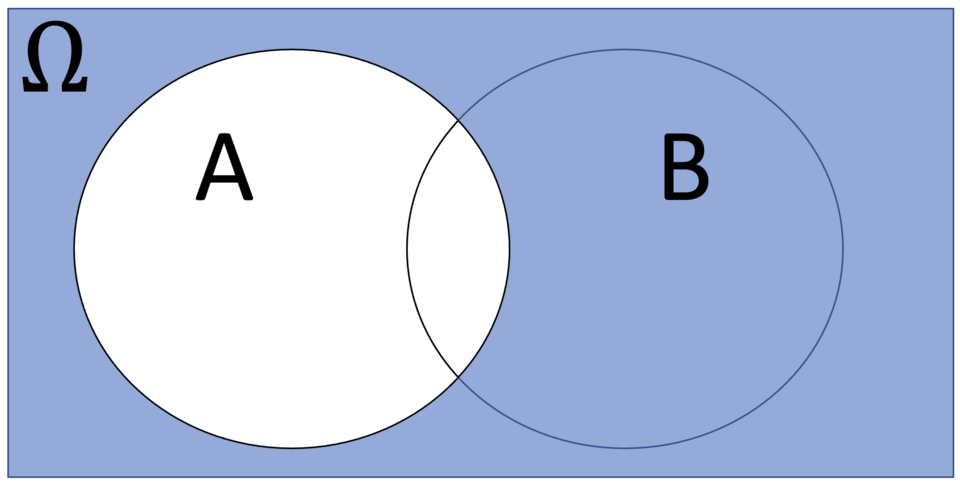
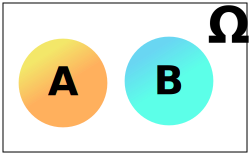
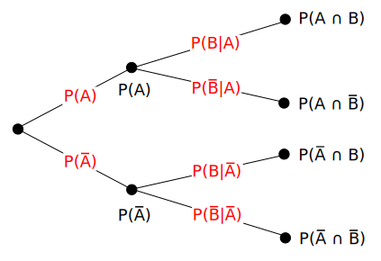
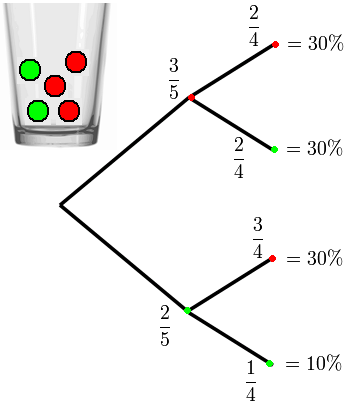
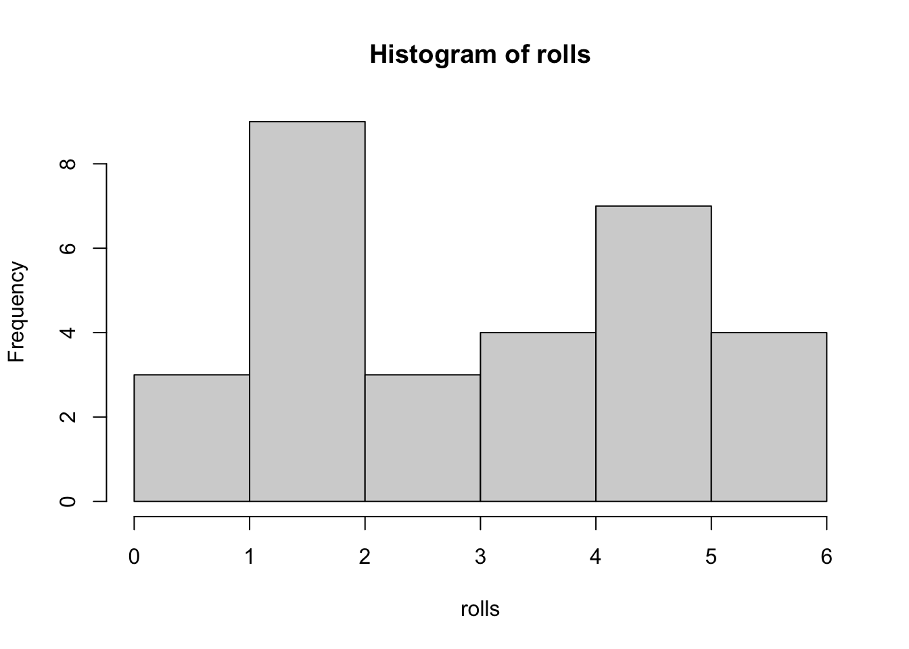
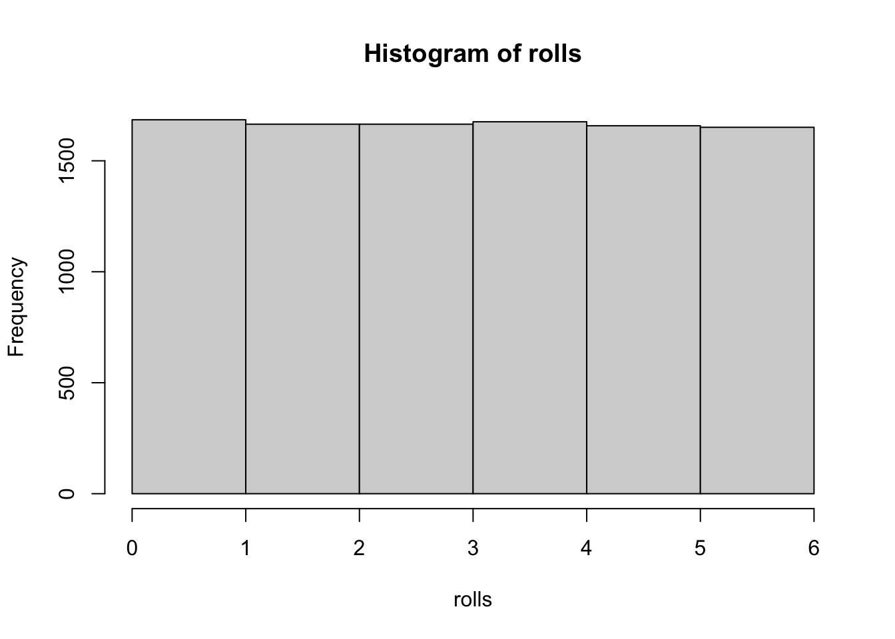

set.seed(12)Probability
Lecture 6 - FNDN07012
Notation
Experiments
Whenever we do an experiment, whether that’s one we’ve orchestrated or an observation of a natural phenomena, this gives rise to a sample space (denote \(\Omega\)) of possible outcomes.
| Experiment | \(\Omega\) (Sample Space) |
|---|---|
| Roll a dice | \(\lbrace 1,2,3,4,5,6 \rbrace\) |
| Roll two dice | \(\lbrace (1,1), (1,2), (1,3), \ldots, (1,6), (2,1), \ldots (6,6)\rbrace\) |
| Toss a coin | \(\lbrace \text{H}, \text{T} \rbrace\) |
| Toss a coin until heads | \(\lbrace \text{H}, \text{TH}, \text{TTH}, \text{TTTH}, \ldots \rbrace\) |
| Human lifetime | \(0 \leq t < \infty\) |
Note that these can be discrete or continuous, finite or infinite!
We refer to elements in a sample space as elementary events.
Events
Elementary events aren’t the only type though; we can create more complicated ones!
| Experiment | \(\Omega\) (Sample Space) |
|---|---|
| Roll a dice | \(\lbrace 1,2,3,4,5,6 \rbrace\) |
For example:
- an elementary event might be \(E =\) ‘roll a 3’.
- a non-elementary event could be \(A =\) ‘roll an even number’.
If \(X\) is a variable representing the dice outcome, we’d denote the probability of these events by \[ \mathbb{P}(X=3) = \frac{1}{6}, \qquad \mathbb{P}(X\in\lbrace 2,4,6 \rbrace) = \frac{3}{6} \] respectively.
And, Or, Not
Events are defined in terms of sets of outcomes. For sets \(A\), \(B\), we define:
- \(A\cup B\) as outcomes that are in at least one of \(A\) or \(B\);
- \(A\cap B\) as outcomes that are in both \(A\) and \(B\);
- \(A\backslash{}B\) as outcomes that are in \(A\) but not \(B\).



Compliment
A special example is ‘\(A\) does not happen’, denoted \(A^{\text{C}} := \Omega\backslash A\).

{kind=link}
For example, if \(A\) is ‘rolls a 3’, \(A = \lbrace 3\rbrace\). The compliment of \(A\) would be
\[ A^{\text{C}} = \Omega\backslash\lbrace3\rbrace = \lbrace 1,2,4,5,6 \rbrace, \] i.e. the set containing every possible outcome except those in \(A\).
Exclusive
Two events \(A\) and \(B\) are mutually exclusive if they have no overlapping outcomes.

{kind=link}
For example, if \(A = \lbrace 1,3,5 \rbrace\) (‘roll odd’) and \(B = \lbrace 2,4,6 \rbrace\) (‘roll even’) then these are mutually exclusive.
We denote this \(A\cap B = \emptyset\), where recall ‘\(\emptyset=\lbrace\rbrace\)’ is the empty set.
Dependence
Conditional
The probability of an event \(A\) occurring given another event \(B\) has occurred is defined \[ \mathbb{P}(A|B) = \frac{\mathbb{P}(A\cap B)}{\mathbb{P}(B)},\quad \mathbb{P}(B)\neq0. \]
For example, if we get \(X\) on a dice, what’s the probability \(X=2\) if we know \(X\) is even? \[ A = \lbrace 2 \rbrace,\ B = \lbrace 2, 4, 6\rbrace \quad\Rightarrow\quad A \cap B = \lbrace 2\rbrace. \] Then \[ \mathbb{P}(A|B) = \frac{\mathbb{P}(X\in\lbrace2\rbrace)}{\mathbb{P}(X\in\mathbb{2,4,6})} = \frac{1/6}{3/6} = \frac{1}{3}. \]
Independent
Two events \(A\) and \(B\) are independent if one happening doesn’t change the probability of the other happening. That is
\[ \mathbb{P}(A|B) = \mathbb{P}(A)\quad \text{and}\quad \mathbb{P}(B|A) = \mathbb{P}(B). \] From this, an equivalent definition is \[\mathbb{P}(A\cap B) = \mathbb{P}(A)\mathbb{P}(B).\]
Outcome Trees
A neat way to map branching probability is using a tree diagram.

{kind=link}

{kind=link}
Experimental vs. Theoretical
Experiments
If we roll a dice 30 times, how many threes would we expect to get?
Theory
The \(\mathbb{P}(X=3) = \frac{1}{6}\). Therefore we expect to get \(30\times\frac{1}{6} = 5\) threes.
In practice, it probably won’t be that many.
# sample space is dice face values
faces <- c(1, 2, 3, 4, 5, 6)
# roll it 30 times, allow repeats
rolls <- sample(faces, 30, replace=TRUE)
# display outcomes as a chart and a list
hist(rolls, breaks=0:6); rolls
[1] 2 2 3 6 5 5 4 2 3 2 5 2 1 6 4 2 2 5 4 1 2 3 6 5 6 4 5 5 1 2Law of Large Numbers
As the number of repeats goes up, the theoretical and experimental probability will get closer. Here, for \(n = 10,\!000\) rolls we’d expect there to be \(1667\) where \(X = 3\).
# sample space is dice face values
faces <- c(1, 2, 3, 4, 5, 6)
# now roll it ten thousand times!
rolls <- sample(faces, 10000, replace=TRUE)
# display outcomes as a chart
hist(rolls, breaks=0:6)
This idea is grounded in a mathematical result called the Weak Law of Large Numbers.
One of the major applications of this is the Monte Carlo method for approximations.